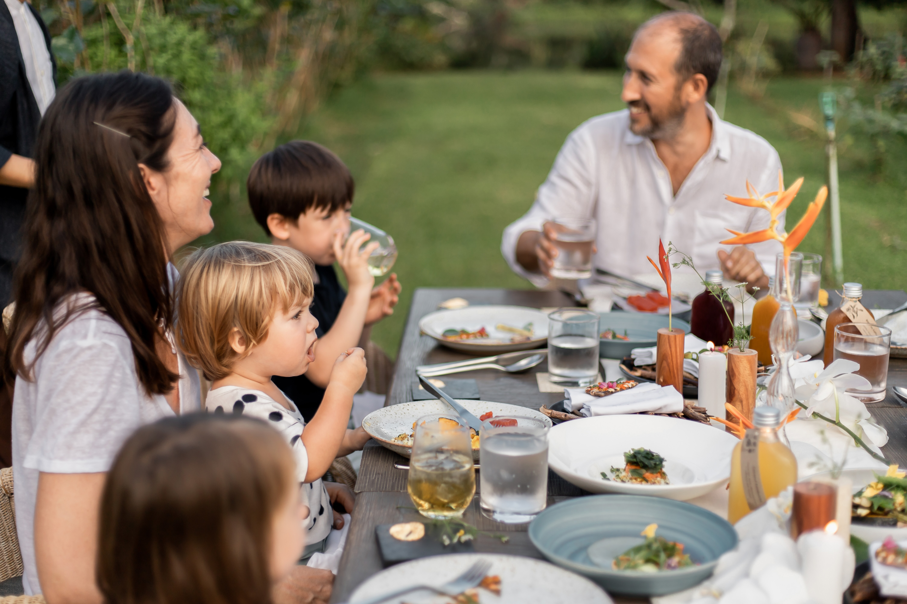
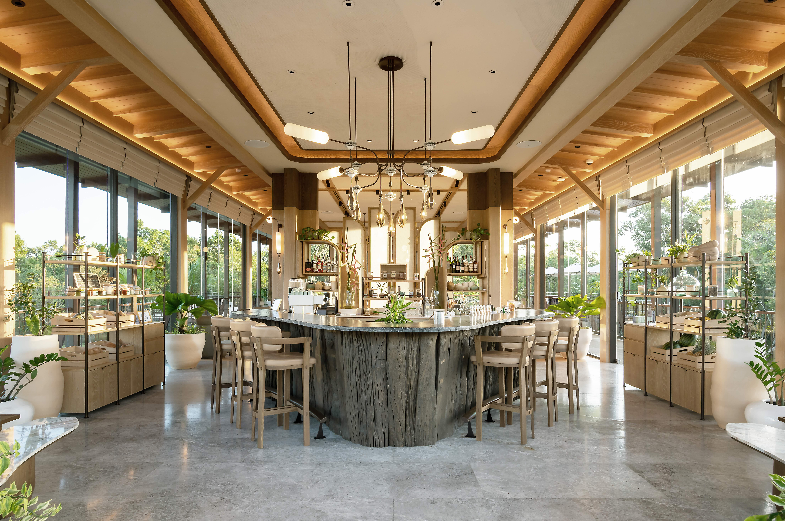

Wealth Migration · Operational Living · Southeast Asia
165,000 Millionaires
Will Relocate This Year.
Where Are They Going?

Above: Southeast Asia. Where private capital is relocating not for lifestyle — but for infrastructure.
A record 142,000 millionaires relocated internationally in 2025. Forecasts for 2026 point to 165,000 — the largest migration of private wealth in recorded history. The pattern has changed. So has the logic behind it.
For decades, the flow of global wealth moved in predictable directions: London, New York, Geneva, Singapore. That pattern is breaking.
The UAE attracted a net inflow of 9,800 millionaires in 2025 — the highest of any country. But the more significant story is further east. Singapore's single-family office count has tripled since 2020. Hong Kong added 681 in two years. And Thailand — a country most wealth advisors would not have named five years ago — grew its millionaire population by 50% in a decade and now issues a 10-year residency visa for wealthy global citizens, with full tax exemptions on foreign-sourced income.1
Above: The standard view. Increasingly, it represents a standard of living that no longer matches the standard being held.
The motivations are not primarily tax-driven. Henley & Partners' data shows that the top-cited reasons for relocation among UHNW founders are healthcare infrastructure, operational quality of life, and — increasingly — access to environments that match the standard they have built internally but cannot find externally.2
Phuket is not an emerging market. It is a mature luxury infrastructure with thirty years of operational depth — and it is entering a different phase.
Thailand's largest island, roughly the size of Singapore, already operates at a hospitality standard that most Asian destinations aspire to. Amanpuri opened here in 1988 — the first Aman property in Asia. Trisara followed, then Banyan Tree, Rosewood, and a generation of owner-operated properties that set a benchmark for service precision in the region. The island's luxury hospitality is not a marketing claim. It is a track record.3


Above: The interior. Where the island's last significant land meets its most established infrastructure.
The infrastructure is concrete: an international airport with direct flights to Singapore, Hong Kong, Bangkok, Kuala Lumpur, Sydney, and most Asian capitals. Two JCI-accredited international hospitals. Established international schools (British, American, IB curricula). A 10-year LTR visa programme with tax exemptions on foreign income. And a legal framework for foreign ownership structures that has been tested for decades, not months.4
What has changed is the land equation. The west coast — Surin, Kamala, Bang Tao — is effectively built out. The interior districts of Thalang and Thep Krasatti hold the last significant parcels. Luxury property prices island-wide grew 12–15% year-on-year in 2025. Foreign buyers now account for over 60% of high-end transactions.5
For the standards-driven buyer, Phuket's case is operational: proven hospitality infrastructure, medical access, aviation connectivity, and a legal framework — at a land cost that Singapore, Hong Kong, and Tokyo cannot match. The question is not whether the island is ready. It is whether the right land is still available.
Branded residences are the fastest-growing segment in global luxury real estate. Knight Frank tracks 12% annual growth worldwide, with Asia-Pacific now accounting for 20% of global supply. For family offices — 40% of which plan to increase real estate allocations — branded residential is the second-highest priority sector after equities.6
Clinical longevity is separating from spa wellness entirely. The preventive health market is projected to grow from $23.5 billion to over $46 billion by 2032 — driven not by trend but by a generation of founders who treat health the way they treat operations: with systems, measurement, and discipline. Clinique La Prairie, founded in Switzerland in 1931, is expanding its clinical footprint into Asia precisely because the demand has shifted from episodic to infrastructural.7

Above: At this scale, the question shifts from property to infrastructure.
Land at scale is the constraint. Singapore has none. Bali is restricted. Phuket's interior districts still hold parcels large enough to build integrated environments — not just residences, but operational ecosystems with health, service, and land as a single coherent system. That window is closing.5
The buyer driving this market is not looking for a better address. They have addresses. What they lack is an environment where the standard they maintain internally — in their businesses, in their health protocols, in their service expectations — is matched by the place itself.
That requires five conditions, operating simultaneously:
Health infrastructure. Not a clinic to visit — a clinical system embedded in the daily environment. Preventive, measurable, ongoing.
Service precision. Hospitality applied to residential life at the level of the best operators in the world. No friction. No management burden on the owner.
Multigenerational utility. A place that serves three generations without compromise — private enough for independence, close enough for daily proximity.
Connectivity. An international airport within minutes. Direct flights across the region. Close enough to business centres that the place functions as a real base.
Land that holds. Not a unit in a tower. A stake in a physical environment — one that can be transferred, not just resold.

Above: The difference between a property and an operating environment is visible in every detail.
One project in Phuket's interior is built to this standard. Tri Vananda — 232 acres, 77 families, a Health Resort by Clinique La Prairie, a service standard shaped by over twenty years at Trisara, and 85% of the land kept as nature. Fifteen minutes from the international airport.
Private visits by arrangement.
1 Henley & Partners, Private Wealth Migration Report, 2025. Thailand BOI, LTR Visa Programme, 2025.
2 Henley & Partners, Private Wealth Migration Report, 2025. Relocation motivations survey.
3 Amanpuri opened 1988. Trisara, Banyan Tree, Rosewood — three decades of established luxury operations.
4 Phuket International Airport, direct flight network. Bangkok Hospital Phuket & Siriroj International Hospital (JCI).
5 CBRE Thailand & Knight Frank, Phuket luxury market analysis, 2025. Foreign buyer transaction data.
6 Knight Frank, The Wealth Report 2025 & The Residence Report 2025/26.
7 Stratistics MRC, Longevity Clinics & Preventive Health Market, 2025. Clinique La Prairie global expansion.